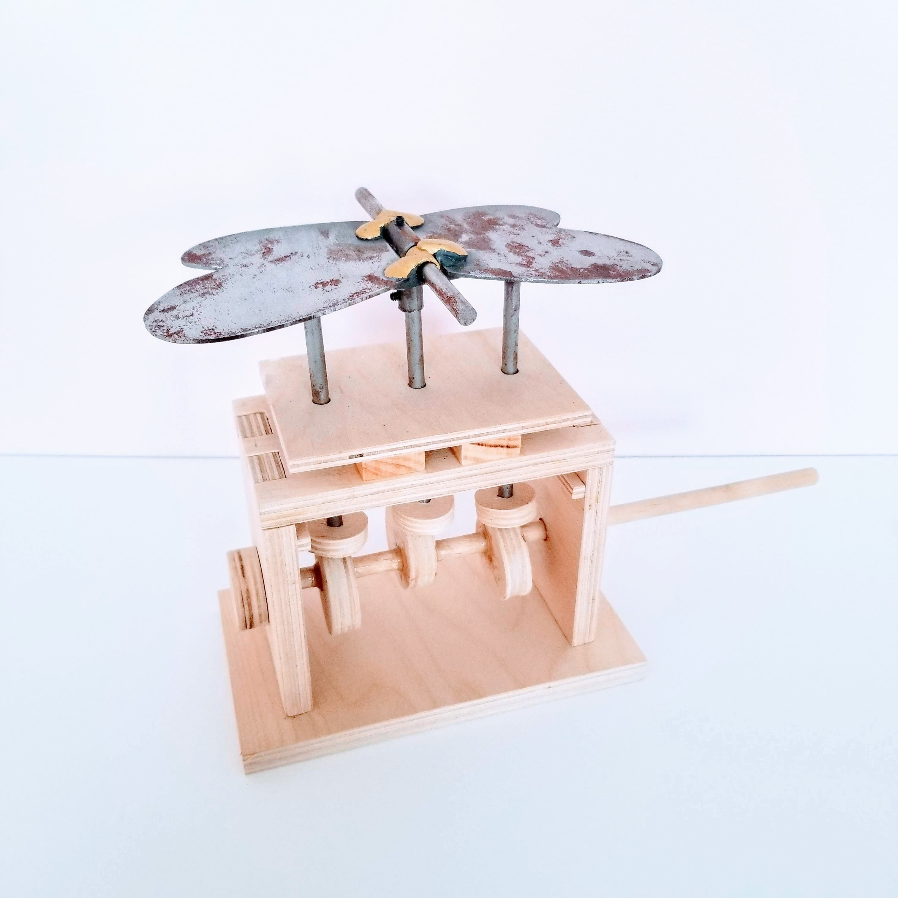
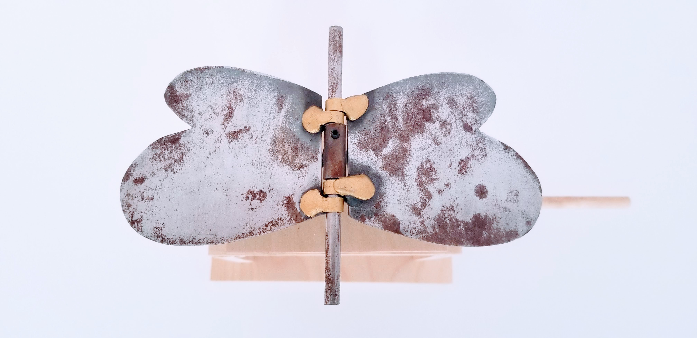
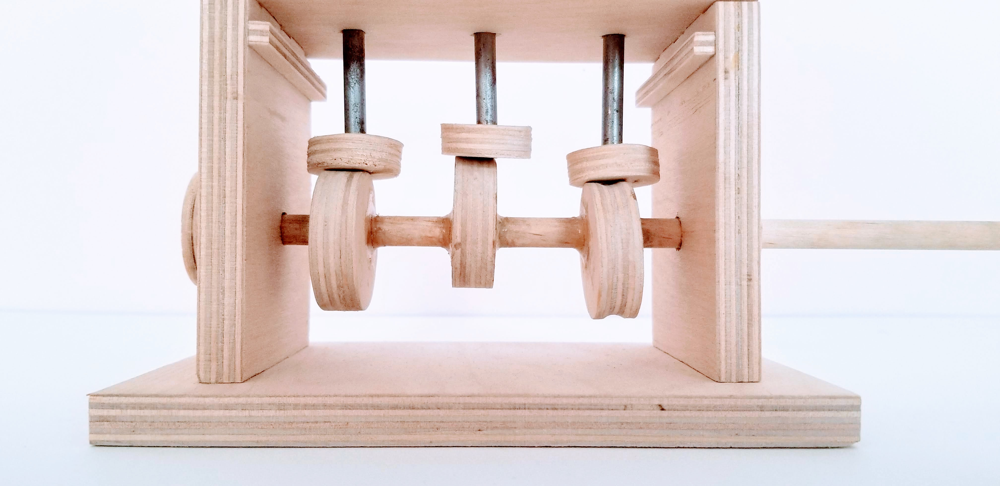
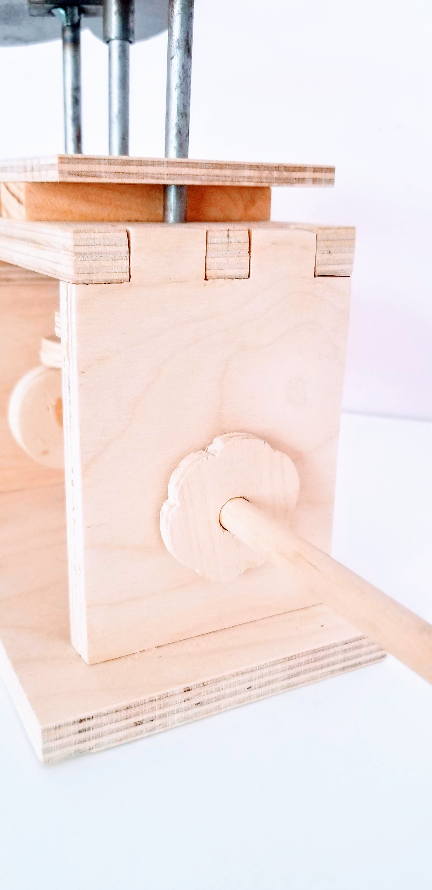
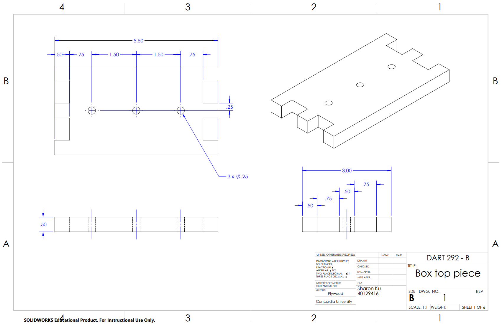
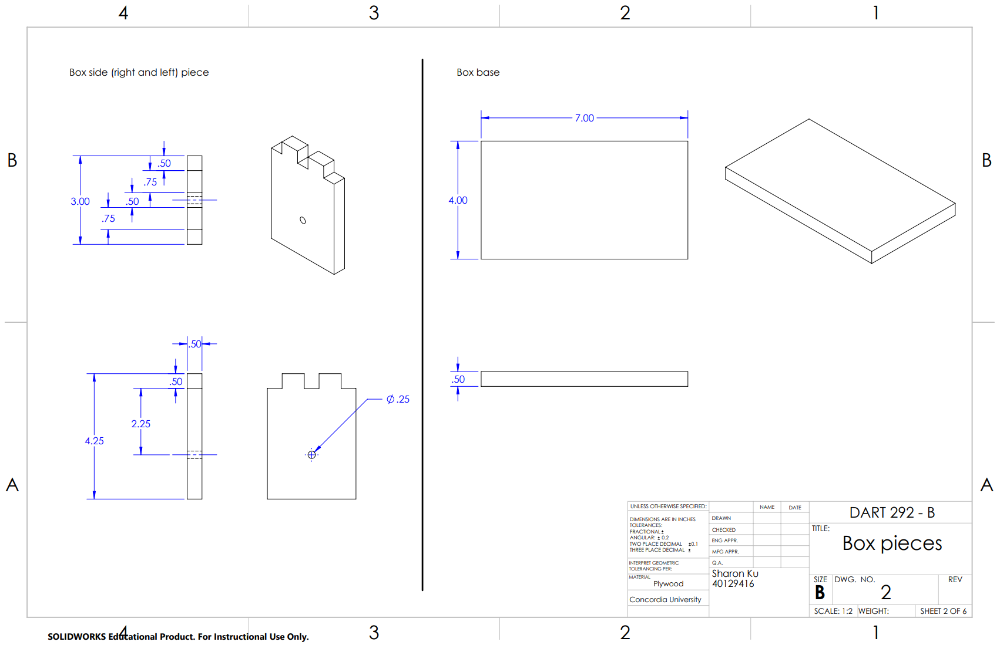
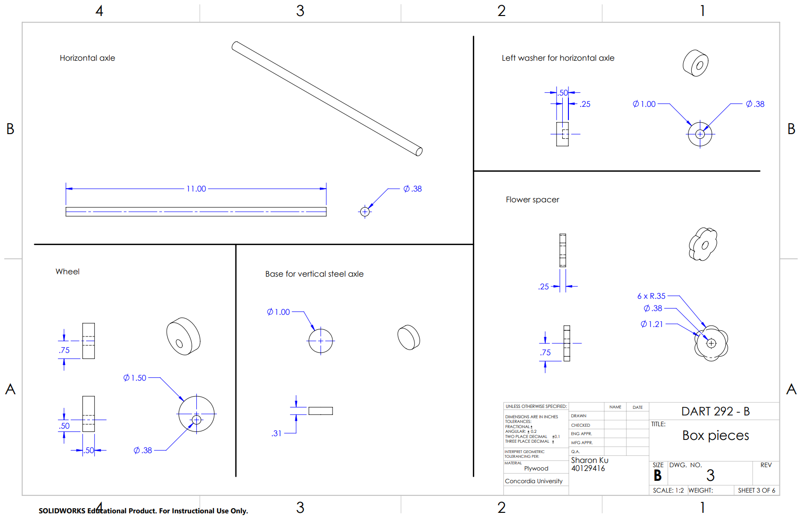
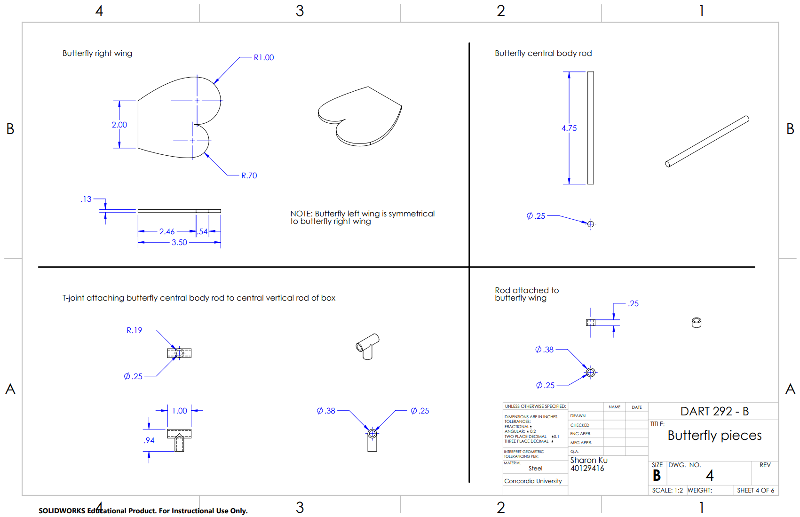
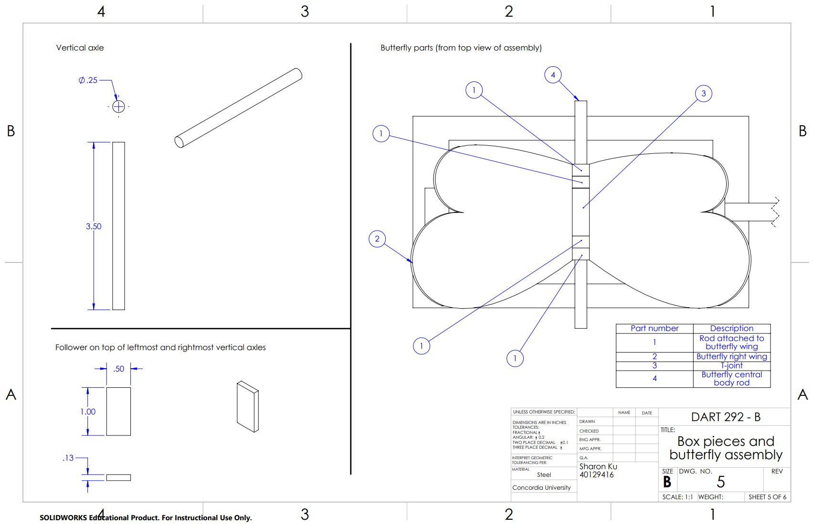
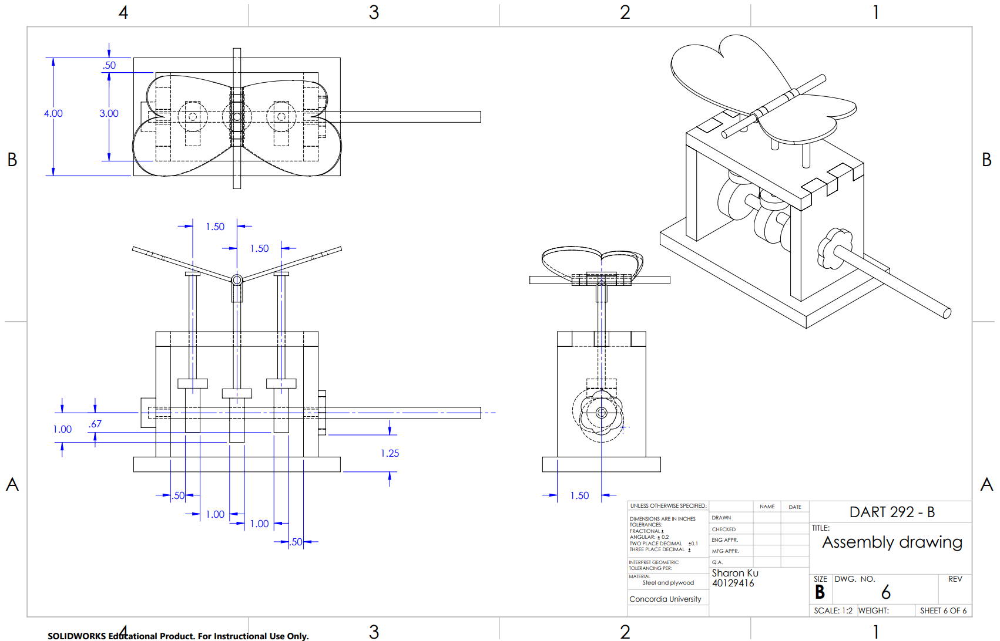
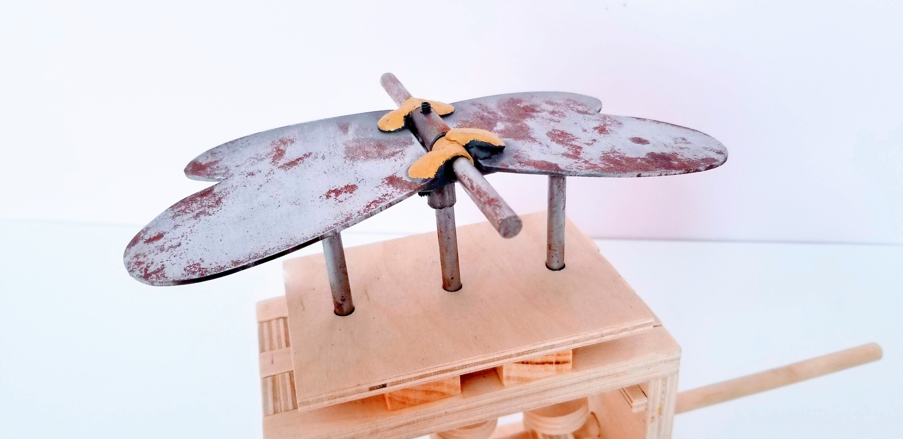










Hungry Fishies
Root Fruit
Stayhere
A Snail's Journey
Hopping Dustballs
Mischievous Monkey
Portfolio Website
AGIC Social Media Posters
Reserve & Shop Infographics
Best Practices for Reopening During COVID-19
The World of Type
The Coccco Bag
Milkweed Delights
Dragon Sculpture in a Fantasy Gallery
Butterfly Automata